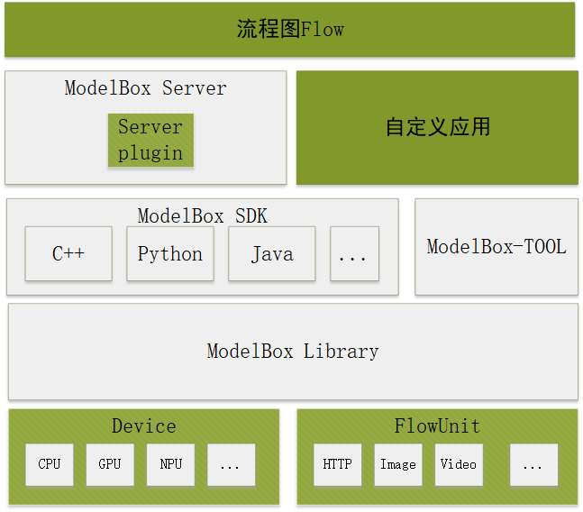

应用开发与调试
本章节开始，将开始介绍如何使用ModelBox进行应用的开发。ModelBox在设计中以易扩展为目标，在框架多个位置增加了扩展的能力，提供多种编程的模式，以及多语言的支持，以更加灵活的满足应用的实现。
ModelBox的扩展能力如下：
- ModelBox服务插件扩展。
- ModelBox组件可任意集成。
- 推理加速设备支持扩展。
- 功能单元的扩展及复用。
- C++，Python等多语言的开发支持。
针对这些扩展能力，ModelBox提供了开发套件，开发者可以根据自身业务场景利用ModelBox提供的开发接口进行灵活扩展。
ModelBox开发套件
ModelBox的开发视图如下，图中绿色的部分是开发者可以自定义扩展的部分。

ModelBox开发套件包含如下部分：
流程图 Flow
控制ModelBox执行的过程，默认情况，采用Graphviz DOT语言进行流程图设计，开发。
ModelBox Server
为简化服务化应用开发者的工作量，ModelBox集成了服务功能，ModelBox Server有完善的服务集成功能，REST-API功能，任务管理功能，并集成了ModelBox library，对应用开发者提供了插件扩展的接口，应用开发者只需编写业务需要的服务插件，即可驱动ModelBox和业务控制服务对接。
自定义应用
与ModelBox Server对应，如果业务需要更多的定制能力，业务可以直接使用ModelBox SDK提供的接口来驱动ModelBox，支持的语言有C++，Python，Java等。
ModelBox SDK
ModelBox应用提供的开发API，包含了C++, Python，Java等多种语言的支持。开发者可以使用自己熟悉的语言进行集成或扩展。
ModelBox Tool
ModelBox 开发调试工具，可用于检查图的正确性，调试单个图，查询可用的功能单元Flowunit，模型加密等功能。
ModelBox Library
ModelBox核心库，包含了ModelBox运行需要的功能，包含内存管理，调度管理，图管理等功能。此核心组件不可定制，开发者直接通过API使用ModelBox核心库功能。
ModelBox Flowunit
功能单元，ModelBox的关键组成，处理数据的关键组件，也是开发者主要开发的组件。
ModelBox Device
设备支持组件，用于支持特定的硬件，如GPU，Ascend芯片等，ModelBox已经内置了主流的GPU，Ascend芯片开发支持。开发者只需要开发相应的功能即可。
AI应用开发典型场景
基本AI应用开发场景
对于基本AI应用开发场景，开发者需要进行流程图开发和功能单元开发：流程图开发需要将业务流程通过功能单元编排的方式组织ModelBox可以识别的配置文件，功能单元开发则是需要实现业务的基础功能。
与外部系统存在交互
对于外部系统存在交互的场景需要当进行Server Plugin服务插件开发，典型场景如：视频场景分析任务的输入源信息往往是从外部系统下发，需要有一个Server与外部系统进行对接，然后转换为Modeblox分析任务。
硬件扩展
当应用需要支持的运行环境含有ModelBox未支持的硬件设备时，则开发者需要扩展开发ModelBox Device推理加速设备支持模块。
系统集成
通常基于Modelbox的AI应用作为独立进程运行，当AI应用需要作为组件被集成到其他系统进程中时，可以直接使用libmodelbox组件提供的ModelBox SDK API进行集成开发，完成应用的集成, Modelbox同时提供了C++ SDK接口和Python SDK接口。
AI应用开发流程
通常情况，可以按照如下流程进行应用开发：
开发前准备
AI应用开发前需要准备好匹配当前ModelBox版本支持的推理框架和版本的模型文件，否则无法进行推理。如果是采用tensorRT框架，还需要注意模型转换时的显卡类型需要与运行时的显卡类型匹配。
创建工程
通过modelbox-tool创建AI应用工程，具体命令如下：
modelbox-tool create -t project -n [ProjectName] -d ./默认工程目录结构如下：
[ProjectName] |---Cmake //cmake脚本 |---package //打包脚本 |---src |---flowunit //存放功能单元代码 ---flowunitA ---flowunitB |---graph //存放图配置 ---graph.toml |---service-plugin //存放服务插件代码 ---pluginA ---pluginB |---CMakeLists.txt |---test //测试框架及用例 |---thirdparty //存放第三方库 |---CMakeLists.txt流程图开发
梳理实际业务逻辑，设计拆分为多个功能单元，再编排为图。具体开发流程可见流程图开发。 修改图toml文件其他系统配置项，重点关注
driver.dir路径是否正确。功能单元开发
通过modelbox-tool创建对应语言的功能单元模板，具体命令如下：
modelbox-tool create -t c++ -n [name] -d ./ProjectName/src/flowunit modelbox-tool create -t python -n [name] -d ./ProjectName/src/flowunit modelbox-tool create -t infer -n [name] -d ./ProjectName/src/flowunit命令执行后会生成对应文件和函数，注意name不可携带数字、中划线等特殊字符，建议是全英文。 模板创建完成后进行接口函数实现，具体开发流程可见功能单元开发
服务插件开发 不涉及新增服务插件可跳过此步骤。
通过modelbox-tool创建对应语言的服务插件模板，具体命令如下：
modelbox-tool create -t service-plugin -n [name] -d ./ProjectName/src/service-plugin命令执行后会生成对应文件和函数，注意name不可携带数字、中划线等特殊字符，建议是全英文。 模板创建完成后进行接口函数实现，服务插件开发流程可见功能单元开发
功能调试
可以使用样例工程自带的测试框架进行功能单元和图的用例测试。也可以安装在到当前系统进行调试。编译安装过程如下： 在工程最上级目录执行如下命令进行编译安装：
mkdir build cd build cmake ../ -DCMAKE_BUILD_TYPE=Debug make install功能单元so、服务插件so、python、模型文件、图配置等都会安装到Cmakelist中指定的路径（默认安装在
/opt/modelbox/目录下）。也可以通过make package进行打RPM包。安装完成后可以通过modelbox-tool 在环境上运行图文件进行调试。命令如下：
modelbox-tool -verbose [-log-level INFO] [-log-path filepath] flow -run [/path/to/graph.toml]具体可见调试。
性能调优
可以使用profiling工具对性能数据进行采集分析和优化，具体使用可见性能。
系统集成
通常情况使用ModelBox服务运行图即可。如果有诉求需要将ModelBox图的运行集成到其他进程时，可采用ModelBox提供的sdk接口进行调用。具体可见SDK API集成。